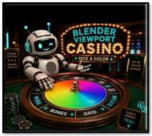
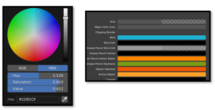
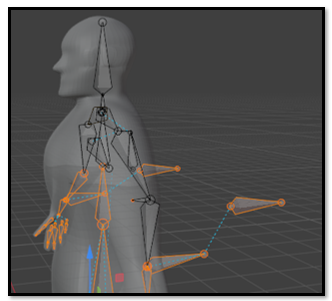
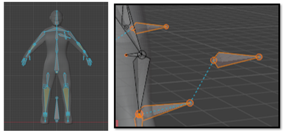

~14 Changing the Colors of Elements in the Viewport~
12/7/2026

Edit → Preferences → Themes → 3D Viewport
The Wire setting changes the color of the parenting lines, and the armature wire display in the 3D Viewport.


Watch It — This setting can also change the outline color of bones while working in Edit Mode. If you choose a very bright color, you may occasionally look at the bones and think, “Oh no, red! I must have done something wrong.
I chose this teal color because it works well for both the parenting lines and the armature display.
